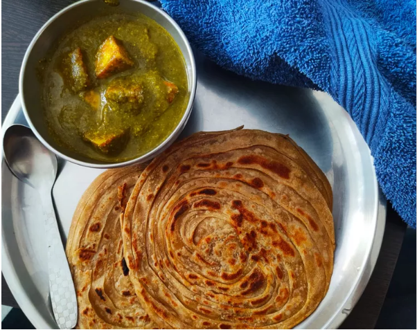

Palak Paneer
This butter chicken recipe, or chicken makhani, is one of my favorite Indian dishes. It features a full-flavored sauce that complements the chicken well. It can be made as mild or spicy as you wish by adjusting the cayenne. Serve with basmati rice and naan bread

Follow the steps below to make palak paneer
- Heat 1 tablespoon olive oil in a skillet over medium heat; cook and stir onion in hot oil until slightly tender, about 5 minutes. Add garlic, coriander, turmeric, garam masala, red pepper flakes, curry powder, cumin, and salt; cook and stir until fragrant, about 1 minute.
- Mix spinach, tomatoes, water, and ginger into onion mixture; simmer for 20 minutes. Remove from heat and cool slightly, about 5 minutes.
- Transfer spinach mixture to a blender and blend until smooth. Set aside.
- Heat remaining 1 tablespoon olive oil in the same skillet over medium heat; cook and stir paneer in hot oil until lightly browned, about 5 minutes. Stir in puréed spinach mixture and cook until heated through, 3 to 5 minutes